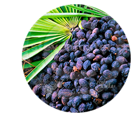
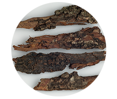
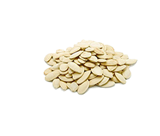

-

100% organico
¡Seguro! -

¡La eficiencia de un 98%
está demostrada por los hombres! -

2765 hombres ya se han
curado
Una revolución en el tratamiento de la prostatitis
20 miles de hombres en Europa ya han olvidado del dolor y problemas de micción
-
PASO1
desparece el dolor, cólico, ardor en la ingle y cintura
-
PASO 2
la micción se vuelve estable, infrecuente, se elimina la inflamación
-
PASO 3
se recupera la erección, el organismo se fortaleza, la prostatitis no regresa
¡PONTE A PRUEBA! PRÓDROMOS DE LA PROSTATITIS:
-

Una vez al año/medio año Usted ha sentido el dolor tirante en la zona de la ingle
-

A veces Usted siente punzadas, presión en la ingle
-
Usted se ha dado cuenta de miccionar más a menudo
-

Ve que un testículo está más bajo que el otro
-

De vez en cuando Usted sufra por el estrenimiento o diarrea
-

Ve que la erección se ha vuelto más débil
-

Se ha bajado la libido
-

Aunque una vez Usted ha tenido problemas con la micción
¡SI USTED HA DESCUBIERTO EN SÍ AUNQUE UN SÍNTOMO, COMIENCE URGENYE EL TRATAMIENTO!
Usted sufre por el dolor. La prostatítis no le deja vivir. Es posible que Usted se sienta peor aun en los próximos 1 o 2 años. La infertilidad. La sangre a la hora de eyacular y miccionar. La estasis de la orina en la vejiga (hasta 500 ml). La vesiculítis.
-

IMPOTENCIA
Impotencia sexual incurable
-

ADENOMA DE PRÓSTATA
Crecimiento excesivo del tejido de la próstata, formación del tumor y “nudos”
-

ONCOLOGÍA
Tumor maligno, la causa más frecuente de la muerte de los hombres
¡COMIENCE LA CURACIÓN AHORAY VUÉLVASE ABSOLUTAMENTE SANO!
¡EL REMEDIO EFICIENTE CUIDANDO DE LA SALUD MASCULINA!
-
Sin masaje humillante
-

Sin pastillas ni inyecciones caras
-

Sin operación quirúrjica
-

Sin diagnóstico costoso
-

La eficiencia clinicamente demostrada en un 98% de los pacientes curados
-

Está reconocido por el preparado más eficaz para los hombres en la edad de 40+
-

Aprobado por la Asociación Europea de Médicos
-

Altas tecnologías y componentes al 100% ecológicos sin sustancias químicas
-

EXTRACTO DEL FRUTO DE LA PALMA SABAL
ELIMINA EL AUMENTO DE LA GLÁNDULA PROSTÁTICA, TIENE UN EFECTO INMUNOESTIMULANTE
-

EXTRACTO DE CIRUELAS AFRICANAS
REDUCE LA EDEMA E INFLAMACIÓN DE LA PRÓSTATA, PREVIENE LA FORMACIÓN DEL TEJIDO TUMORAL
-

SEMILLAS DE CALABAZA, VITAMINA E
ELIMINAN LA ÉSTASIS EN EL SISTEMA URINARIO, RECUPERAN EL FUNCIONAMIENTO DE LA GLÁNDULA PROSTÁTICA
MODO DE USO
- Cápsulas: Tomar 1 cápsula 1 vez al día 30 min. antes de comer.
- Un ciclo de tratamiento es de 30 días.
OPONIÓN DE EXPERTOS

ProstEro Ha facilitado el trabajo de “los medicos gratuitos”. Veo a mis pacientes 2 veces. La primera es cuando vienen a diagnosticarse, y la segunda es cuando en un mes vienen para decirme “¡Gracias, estoy sano!”. Y las clínicas comerciales no tienen suerte, con ProstEro les será 10 veces más difícil lucrar con la gente común.
Leonidas Sáenz
Candidato de Ciencias Médicas, profesor, médico andrólogo, sexologo.Graduado de la Universidad Autónoma de Madrid Antigüedad de trabajo es 23 años
La composición de ProstEro habla por sí solo. Es un remedio absolutamente seguro para los hombres de edad. Gracias a la fórmula única y concentración de los componentes activos, vitaminas, se elimina la inflamación, se recuepra la erección, la prostatitis no regresa. El organismo masculino funciona como un reloj suizo.
Iván López
Andrólogo principal, médico de la categoría superior.Graduado de la Universidad Complutense de Madrid Antigüedad de trabajo es 19 años
LA EFICIENCIA DEMOSTRADA CLÍNICAMENTE
RESULTADO DE LA INVESTIGACIÓN
MEDICAMENTO FARMACÉUTICO CONTRA LA PROSTATITIS
-
56%Reducción de las sensaciones dolorosas, cólico y ardor
-
57%Normalización de la micción
-
28%Disminución de la urgencia miccional hasta la norma
-
9%Cambio del tamaño de la próstata hasta la norma
-
35%Ausencia de las manifestaciones de la enfermedad después de interrumpir el tratamiento
PROSTERO
-
100%Reducción de las sensaciones dolorosas, cólico y ardor
-
97%Normalicación de la micción
-
98%Disminución de la urgencia miccional hasta la norma
-
89%Cambio del tamaño de la próstata hasta la norma
-
98%Ausencia de las manifestaciones de la enfermedad después de interrumpir el tratamiento
VENTAJAS DE ProstEro
-

SOCORRO DE URGENCIA
Síntomas dolorosos desaparecen durante la primera semana
-

PRODUCTO HIPOALERGÉNICO
A diferencia de los antibióticos y ungüentos para los hombres
-

EFECTO EFICIENTE SIN EFECTOS SECUNDARIOS
Las altas tecnologías permiten obtener un concentrado de plantas medecinales puro como cristal, sin impurezas
-
SANEAMIENTO INTEGRAL
La influencia intensiva en los tejidos de la próstata, efecto tónico general. Más fuerzas, energía, la libido fortalecida, la potencia excelente
OJO CON LAS FALSIFICACIONES
Con el crecimiento de la popularidad de ProstEro, se han hecho más frecuentes los casos de las falsificaciones a precio muy bajo. Solamente aquí Usted puede comprar un producto original con un descuento de un 50%.
-
Haga el pedido momentáneo y reciba un descuento de un 50%
-

Espera la llamada del operador para precisar los detalles
-

¡Sin riesgo! Reciba el envío y pague en el correo
ACEPTAMOS PEDIDOS EN TODA EUROPA
-
100% organico
¡Seguro! -
¡La eficiencia de un 98%
está demostrada por los hombres! -
2765 hombres ya se han
curado
Una revolución en la curación de la prostatitis crónica
20 mil hombres en Europa ya han olvidado del dolor y problemas de micción
-
PASO1
desparece el dolor, cólico, ardor en la ingle y cintura
-
PASO 2
la micción se vuelve estable, infrecuente, se elimina la inflamación
-
PASO 3
se recupera la erección, el organismo se fortaleza, la prostatitis no regresa
COMENTARIOS DE LOS HOMBRES, QUE HAN VENCIDO LA PROSTATITIS
He ido con asco a la consulta. He pensado que me harán el masaje de la próstata. El médico me ha dicho que no tengo que preocuparme, si curarlo ahora. Me ha prescrito ProstEro. ¡En 3 meses me siento muy bien!
J. S., Almería
El dolor era así que ni pensar podía sobre el sexo con mi esposa joven. Estaba sufriendo. Ella me ha traido ProstEro. En un mes ya ha sido imposible reconocerme. Sano como un toro. No hay dolor, micciono como una persona normal. EL sexo se ha mejorado.
N****, Toledo
El dolor sordo en la ingle y escroto. El aumento, la inflamación. El diagnóstico ha sido “la prostatítis”. Estaba preparándome para la operación. Pero mientras estaba en un viaje de negocios en Madrid, he visitado el Instituto de Urología. Me han examinado y han prescrito ProstEro. En un mes todo se ha curado como por encanto. Todo sigue bien, no duele, no punza.
****, Malaga
Pedir antes de que crezca el precio